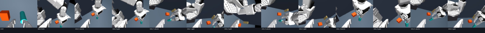
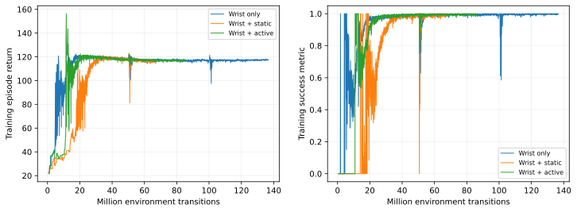

Live report. Updated 2026-10-09T23:06:10.236373+00:00. Three matched RGB policies use the same push task, reset distribution, reward, and static crossbar. The only planned difference is whether the external camera can move.
Landmark visibility requires at least three segmentation pixels for both the source object and goal marker. Source and goal reset independently within ±20 mm. The fixed wall is non-colliding, and the push lane remains below its lower edge.
| Sensor access | Both landmarks visible |
|---|---|
| Wrist alone | 76.6% |
| Fixed home camera alone | 0.0% |
| Wrist + fixed home camera | 76.6% |
| Best of reachable active views, one view | 100.0% |
| Reachable active-view scan | 100.0% |
Landmarks seen individually: wrist source 100.0%, wrist goal 76.6%; static source 100.0%, static goal 0.0%. FOV check: wrist 48.4554906359°; static 48.4554906359°; active 48.4554906359°; configured 48.4554906359°. Camera-arm endpoints with clear sampled paths: 11.

Warp physical feasibility: 128/128 scripted randomized pushes. Rendered RGB PPO smoke: passed; actual source and screen are included in the MjLab scene. The crossbar collision masks are disabled.
The same push_v2 task, ±20 mm reset jitter, Cartesian control and dense reward were first checked with privileged state: at 20,004,864 transitions it reached 501/512 and 510/512 held-out successes on two validation seeds. This supports task/reward learnability before the RGB comparison; it is not an RGB result. Validation seed 30000 · validation seed 31000.
Each run targets 1,000,046,592 transitions (at least 1B) with seed 0. Training curves and held-out evaluation results appear here as workers save checkpoints. Latest observed throughput gives a rough remaining compute estimate; it excludes evaluation, restarts, queue time, and future throughput changes.
| Condition | Observed transitions/s | Estimated remaining GPU time |
|---|---|---|
| Wrist only | 20,601 | 11.6 h |
| Wrist + static | 9,959 | 26.0 h |
| Wrist + active | 12,622 | 20.1 h |

| Condition | Status | Transitions / target | Latest evaluations | Slurm jobs |
|---|---|---|---|---|
| Wrist only | stopped | 136,642,560 / 1,000,046,592 | clean 406/512 at 12,042,240; dynamic 418/512 at 12,042,240; clean 511/512 at 50,036,736; dynamic 510/512 at 50,036,736; clean 511/512 at 100,024,320; dynamic 510/512 at 100,024,320 | 51677171 |
| Wrist + static | stopped | 67,190,784 / 1,000,046,592 | clean 0/512 at 12,042,240; dynamic 0/512 at 12,042,240; clean 507/512 at 50,036,736; dynamic 508/512 at 50,036,736 | 51677156 |
| Wrist + active | stopped | 86,114,304 / 1,000,046,592 | clean 162/512 at 12,042,240; dynamic 166/512 at 12,042,240; clean 506/512 at 50,036,736; dynamic 510/512 at 50,036,736 | 51677159 |
Perception coverage establishes that reachable active views can recover reset landmarks missed by the fixed sensors. It does not establish that PPO learns to move the camera or improves push success; those claims depend on matched completed 1B runs and held-out evaluations. Results from other tasks or privileged policies are not mixed into this comparison.
Machine-readable state: study plan · rendered visibility audit · Warp task validation.